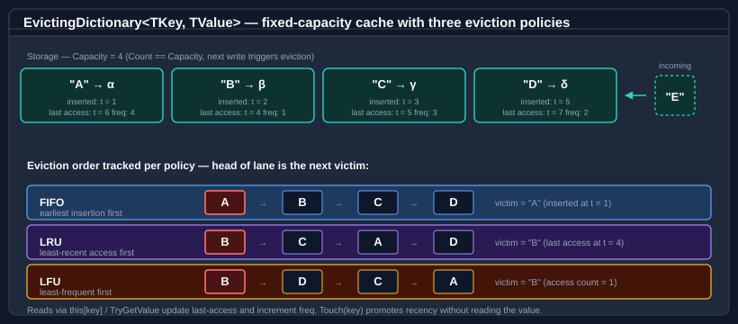

Evicting dictionary
EvictingDictionary<TKey, TValue> is a fixed-capacity dictionary that automatically removes the least-worthy entry when capacity is exceeded. It implements the full IDictionary<TKey, TValue> surface, so it is a drop-in replacement for Dictionary<TKey, TValue> wherever a bounded cache is wanted — the eviction is the only behavioural difference. The victim is selected by one of six eviction policies, fixed at construction:
| Policy | Evicts | Best for |
|---|---|---|
FirstInFirstOut |
The entry added earliest, regardless of access. | Bounded queues; sliding time windows where age, not use, decides. |
LeastRecentlyUsed |
The entry accessed furthest in the past. | General-purpose caches where recency predicts future use. |
LeastFrequentlyUsed |
The entry with the lowest cumulative access count. | Long-lived caches where popularity predicts future use. |
MostRecentlyUsed |
The entry accessed most recently. | Scan-resistant workloads where the just-touched item is least likely to be wanted again (e.g. a sequential cursor over a table). |
RandomReplacement |
A uniformly randomly chosen entry. | Cheap, metadata-free eviction where any approximation is acceptable. |
SecondChance |
A FIFO scan that skips entries flagged as recently accessed (the flag clears on skip), evicting the first unflagged entry. | A low-overhead approximation of LRU — the clock algorithm — without per-access timestamp bookkeeping. |

Note
The enum declaration order is FirstInFirstOut, LeastRecentlyUsed, LeastFrequentlyUsed, MostRecentlyUsed, RandomReplacement, SecondChance — LFU precedes MRU. Do not depend on the numeric values; refer to the members by name.
The default policy when none is specified is LeastRecentlyUsed, and the default capacity is 16.
How the policies track worthiness
Each entry carries the metadata its policy needs — an insertion order link, a recency link, an access count, and a recently-accessed flag — and the policy decides which structure is the next-victim oracle:
| Policy | Internal structure | A successful read… |
|---|---|---|
FirstInFirstOut |
Insertion-ordered linked list. | …does not move the entry. |
LeastRecentlyUsed / SecondChance |
Recency linked list (head = victim). | …moves the entry to the most-recent end (LRU) or sets its reference flag (SecondChance). |
MostRecentlyUsed |
Recency linked list (tail = victim). | …moves the entry to the most-recent end. |
LeastFrequentlyUsed |
Frequency-bucketed sorted structure. | …increments the access count and re-buckets. |
RandomReplacement |
None (plain hash table). | …does not move the entry. |
Reads via the this[key] getter and TryGetValue count as accesses and update the policy metadata; the TotalTouches counter increments. ContainsKey and PeekEvictionCandidate are pure reads and do not count as accesses. Touch promotes a key without reading the value.
Important
Because reads mutate eviction metadata for LRU, MRU, LFU, and SecondChance, even concurrent read-read is unsafe. See Thread safety below.
Pattern 1 — LRU cache
using Bodu.Collections.Generic;
var cache = new EvictingDictionary<string, byte[]>(
capacity: 50,
EvictingDictionaryPolicy.LeastRecentlyUsed);
cache["config.json"] = LoadFile("config.json");
cache["schema.xsd"] = LoadFile("schema.xsd");
// Reading a key marks it as recently used.
if (cache.TryGetValue("config.json", out byte[]? data))
Use(data);
Pattern 2 — FIFO bounded store
using Bodu.Collections.Generic;
var recent = new EvictingDictionary<Guid, string>(
capacity: 100,
EvictingDictionaryPolicy.FirstInFirstOut);
// Oldest entry is evicted once capacity is reached.
foreach (var (id, message) in incoming)
recent[id] = message;
Pattern 3 — LFU cache for hot-spot data
using Bodu.Collections.Generic;
var hot = new EvictingDictionary<int, CompiledQuery>(
capacity: 200,
EvictingDictionaryPolicy.LeastFrequentlyUsed);
hot[queryId] = Compile(sql);
if (hot.TryGetValue(queryId, out CompiledQuery? q))
Execute(q); // increments the access counter
Pattern 4 — scan-resistant cache (MRU)
MostRecentlyUsed evicts the entry just touched. It is the right choice when the access pattern is a one-pass sweep — a sequential cursor or a streaming join — where the item you have just read is the least likely to be needed again, and the older entries are the ones worth keeping:
using Bodu.Collections.Generic;
var cursorCache = new EvictingDictionary<long, Page>(
capacity: 64,
EvictingDictionaryPolicy.MostRecentlyUsed);
// A forward scan: each page read is unlikely to be revisited,
// so on overflow the just-read page is the eviction victim,
// preserving the earlier pages.
foreach (long pageId in scanOrder)
cursorCache[pageId] = ReadPage(pageId);
Pattern 5 — clock approximation of LRU (SecondChance)
SecondChance is the clock algorithm: a FIFO ring where each entry carries a reference bit. On overflow the scan inspects the head; if its bit is set, the bit clears and the entry gets a second chance (rotated to the back), otherwise it is evicted. It approximates LRU's hit rate without LRU's per-access list-splice, so it is cheaper on write-heavy workloads:
using Bodu.Collections.Generic;
var cache = new EvictingDictionary<string, byte[]>(
capacity: 4096,
EvictingDictionaryPolicy.SecondChance);
Pattern 6 — random replacement
RandomReplacement keeps no recency or frequency metadata at all — eviction is a uniformly random pick. It is the cheapest policy per write and is a reasonable default when the access pattern has no exploitable locality:
using Bodu.Collections.Generic;
var cache = new EvictingDictionary<int, Tile>(
capacity: 256,
EvictingDictionaryPolicy.RandomReplacement);
Pattern 7 — explicit eviction promotion (Touch)
Call Touch to promote a key without reading its value — useful when you want to mark an entry as recently used based on external logic. Touch returns false if the key is absent; TouchOrThrow raises KeyNotFoundException instead:
using Bodu.Collections.Generic;
var lru = new EvictingDictionary<string, Session>(
capacity: 1000,
EvictingDictionaryPolicy.LeastRecentlyUsed);
// Extend the session's lifetime on heartbeat.
void OnHeartbeat(string sessionId)
{
if (!lru.Touch(sessionId)) // false — the session was already evicted
ReloadSession(sessionId);
}
Pattern 8 — observing evictions
Two events fire around each eviction, both typed Action<TKey, TValue>:
ItemEvicting— raised immediately before the entry is removed (informational; it cannot cancel the eviction).ItemEvicted— raised immediately after removal, when the key and value are no longer present.
Use them to flush a dirty entry to its backing store, decrement a resource counter, or emit a metric:
using Bodu.Collections.Generic;
var cache = new EvictingDictionary<string, Document>(
capacity: 500,
EvictingDictionaryPolicy.LeastRecentlyUsed);
cache.ItemEvicting += (key, doc) =>
{
if (doc.IsDirty)
FlushToDisk(key, doc); // persist before it leaves the cache
};
Important
Event handlers must not mutate the dictionary. Add, Remove, Clear, and the indexer setter are guarded against re-entry from inside an eviction handler and throw InvalidOperationException if called there. Keep handlers side-effect-only with respect to the dictionary itself.
Time-based expiration (TTL)
Capacity policies answer "which entry is least worth keeping?"; expiration answers "which entries are too old to serve?". The two are orthogonal — supplying an EvictingDictionaryExpiration at construction adds a time dimension on top of any of the six policies:
using Bodu.Collections.Generic;
var cache = new EvictingDictionary<string, Session>(
capacity: 1000,
EvictingDictionaryPolicy.LeastRecentlyUsed,
new EvictingDictionaryExpiration(
timeToLive: TimeSpan.FromMinutes(20),
kind: EvictingDictionaryExpirationKind.Sliding));
The options type is immutable and carries three settings:
| Setting | Meaning |
|---|---|
TimeToLive (TimeSpan?) |
Default lifetime for entries added without a per-entry override. null means such entries never expire (only per-entry TTLs apply). Must be positive when non-null. |
Kind |
Absolute — the entry expires TimeToLive after it was added or last updated; reads never extend it. Sliding — every successful read access restarts the countdown. |
TimeProvider |
The clock (defaults to TimeProvider.System). Inject a fake provider to drive expiry deterministically in tests. |
Without an expiration configuration (Expiration == null) the dictionary never reads a clock and behaves exactly as the capacity-only cache described above.
Which members slide
Under Sliding, the deadline is refreshed by the members that return the entry's value: TryGetValue and the indexer getter. ContainsKey does not slide — it is a pure read that confirms presence without touching the deadline (symmetric with Touch). Enumeration does not slide either, and neither does Touch — Touch promotes the entry in the capacity policy only.
Per-entry TTL overrides
Add(key, value, timeToLive) and TryAdd(key, value, timeToLive) give one entry its own lifetime, overriding the default. Both throw InvalidOperationException if the dictionary was constructed without an EvictingDictionaryExpiration (the feature needs a clock), and ArgumentOutOfRangeException for a non-positive TTL. TryAdd returns false without modifying anything when a live entry already exists; an expired-but-unpurged entry does not block it.
A later plain Add(key, value) or indexer assignment is a fresh lease: it restarts the lifetime using the dictionary default and discards any per-entry override the entry previously carried.
cache.Add("otp:42", oneTimeCode, TimeSpan.FromSeconds(30)); // short-lived override
bool added = cache.TryAdd("otp:42", other, TimeSpan.FromSeconds(30)); // false while alive
Visibility, lazy removal, and the Count contract
Expired entries become invisible immediately — ContainsKey, TryGetValue, the indexer getter, Values.Contains, and enumeration all treat them as absent even before they are physically removed. Removal is lazy:
- a key-directed access (
TryGetValue,ContainsKey, indexer,Touch) that hits an expired entry removes it on the spot and reports a miss; - capacity pressure purges all expired entries before the policy picks a victim — expired entries are always the preferred victims, so live entries are never evicted while an expired one exists;
RemoveExpired()purges everything expired right now and returns the number removed (0when expiry is not configured).
Count deliberately reports the raw stored count, including expired-but-unpurged entries — it stays an O(1) read that never touches the clock (the cachetools model). Enumeration may therefore yield fewer pairs than Count reports; call RemoveExpired() to reconcile. Remove(key) likewise operates on the physical entry and returns true for an expired-but-unpurged key.
Every expiry removal raises the same ItemEvicting / ItemEvicted events and increments the same EvictionCount as a capacity eviction.
Note
There is no background timer — the dictionary only removes expired entries when something touches it. A cache that can sit idle for long periods holds expired entries (and their values) until the next access; schedule a periodic RemoveExpired() call if timely reclamation matters.
Testing with a fake clock
var clock = new FakeTimeProvider(); // any TimeProvider test double
var cache = new EvictingDictionary<string, int>(
8, new EvictingDictionaryExpiration(TimeSpan.FromMinutes(5),
EvictingDictionaryExpirationKind.Absolute, clock));
cache.Add("A", 1);
clock.Advance(TimeSpan.FromMinutes(6));
bool alive = cache.ContainsKey("A"); // false — no real waiting
Inspecting the next victim
PeekEvictionCandidate returns the key that would be evicted on the next overflow, or default when the dictionary is empty. It is a pure read — it does not touch recency or frequency metadata — so it is safe to call in a monitoring loop:
TKey? nextOut = cache.PeekEvictionCandidate();
The EvictionCount and TotalTouches properties expose running totals of how many entries have been evicted and how many accesses have occurred since construction — useful for cache-effectiveness telemetry.
Pattern 9 — assignment semantics
Unlike Dictionary<TKey, TValue>.Add, assigning to an existing key replaces the value and resets its eviction metadata. Note that Add(key, value) here is also add-or-replace — it does not throw on a duplicate key the way Dictionary<TKey, TValue>.Add does. There is no plain TryAdd or GetOrAdd; use the indexer or Add (the only TryAdd overload is the TTL-taking one described under Time-based expiration):
using Bodu.Collections.Generic;
var lru = new EvictingDictionary<string, int>(
capacity: 3,
EvictingDictionaryPolicy.LeastRecentlyUsed);
lru["a"] = 1;
lru["b"] = 2;
lru["c"] = 3;
// Re-assigning "a" resets its recency to newest.
lru["a"] = 10;
// Adding "d" evicts the LRU entry, which is now "b".
lru["d"] = 4;
bool hasB = lru.ContainsKey("b"); // false — evicted
Choosing a capacity and comparer
The capacity is the hard ceiling on entry count and must be greater than zero (the constructor throws ArgumentOutOfRangeException otherwise). A custom IEqualityComparer<TKey> can be supplied through the comparer-taking constructor overloads — for example StringComparer.OrdinalIgnoreCase for case-insensitive keys — and a seed collection can be supplied to pre-populate the cache:
using Bodu.Collections.Generic;
var cache = new EvictingDictionary<string, int>(
capacity: 1000,
policy: EvictingDictionaryPolicy.LeastRecentlyUsed,
comparer: StringComparer.OrdinalIgnoreCase);
Thread safety
EvictingDictionary<TKey, TValue> is not thread-safe. Concurrent reads can mutate eviction metadata (LRU/MRU recency order, LFU access counts, SecondChance reference flags), so concurrent read-read is also not safe without external synchronization. Wrap with a lock or ReaderWriterLockSlim when multiple threads access the same instance, or use the thread-safe variant: ConcurrentEvictingDictionary<TKey,TValue> in the companion Bodu.Collections.Concurrent package supports all six policies over lock-striped segments, with optional TTL and single-flight GetOrAdd.
Keys / Values enumeration order
Keys and Values are live views, but their enumeration order reflects the current eviction order, not insertion order — FIFO/LRU/SecondChance walk the recency list head-to-tail, MRU walks it tail-to-head, LFU walks ascending frequency buckets, and RandomReplacement follows the underlying hash-table order. Do not rely on Keys to recover insertion order under a recency-based policy.
Because reads reorder those structures, enumerators are invalidated not only by writes but by successful lookups: under LRU, MRU, or LFU, a TryGetValue, indexer read, or Touch between iteration steps causes the next MoveNext to throw InvalidOperationException. Materialize the view first (ToArray() / ToList()) when interleaving reads with iteration.
API summary
| Member | Description |
|---|---|
this[TKey] (get) |
Returns the value; throws KeyNotFoundException if absent. Counts as an access (promotes in LRU / MRU / LFU / SecondChance). |
this[TKey] (set) |
Adds or replaces the entry, resetting its eviction metadata. Evicts the policy's victim if capacity is exceeded. |
Add(TKey, TValue) |
Add-or-replace; does not throw on a duplicate key. Restarts the entry's lifetime when expiry is configured. |
Add(TKey, TValue, TimeSpan) |
Add-or-replace with a per-entry TTL override. Requires an expiration configuration. |
TryAdd(TKey, TValue, TimeSpan) |
Adds with a per-entry TTL only if no live entry exists; returns false otherwise. Requires an expiration configuration. |
TryGetValue(TKey, out TValue) |
Returns the value without throwing; counts as an access. Slides the deadline under sliding expiry. |
ContainsKey(TKey) |
Returns true without counting as an access. A pure read: it does not slide the deadline under sliding expiry (it still treats an expired entry as absent and removes it lazily). |
RemoveExpired() |
Purges all expired entries now; returns the number removed (0 when expiry is not configured). |
Expiration |
The EvictingDictionaryExpiration configuration, or null when expiry is disabled (get only). |
Touch(TKey) |
Promotes the key without reading the value; returns false if absent. |
TouchOrThrow(TKey) |
As Touch, but throws KeyNotFoundException when the key is absent. |
PeekEvictionCandidate() |
Returns the key that would be evicted next, or default when empty. Pure read. |
Remove(TKey) |
Removes the entry. |
Clear() |
Removes all entries and resets the running counters. |
Count |
Number of entries currently held. |
Capacity |
Maximum entries before eviction (get only). |
Policy |
The active EvictingDictionaryPolicy (get only). |
EvictionCount |
Total entries evicted since construction. |
TotalTouches |
Total accesses (reads + Touch) since construction. |
Keys / Values |
Live views in current eviction order (see above). |
ItemEvicting / ItemEvicted |
Action<TKey, TValue> events raised before / after each eviction. |
Where to go next
- Circular buffer — fixed-capacity FIFO ring buffer.
- WeekPattern — immutable bitmask value type for sets of days of the week.
- Bodu.Collections guide index — all key types at a glance.
- Bodu.Collections.Generic API reference — full namespace overview.
- Core Foundations guides — every guide in this topic.